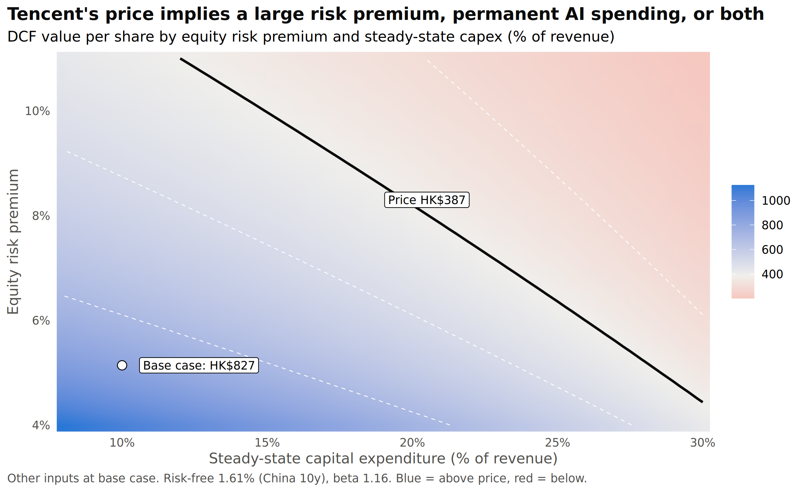
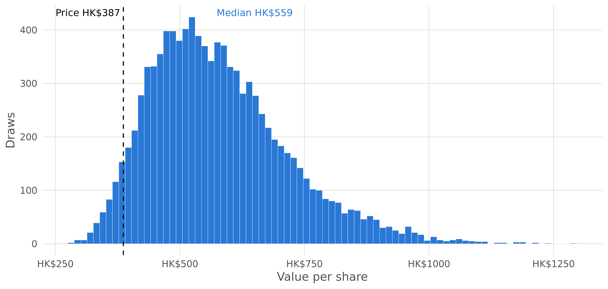

On standard inputs, Tencent is worth well above its share price. A sum-of-the-parts DCF gives HK$827 per share against a price of HK$386.6 (13 Nov 2026). That uses China’s 10-year bond yield (1.61%), Damodaran’s China equity risk premium (5.14%) and Tencent’s own beta from Module 01. The operating business accounts for 90% of the value. The investment portfolio, net of a 20% holding discount, adds 11%, and net cash and minority interests roughly offset each other.
There is no “valuation premium”; the market applies a large discount. To justify today’s price you would need a discount rate of 13.6% (a cost of equity near 15%, an equity risk premium of about 12%). Alternatively, AI capital spending would have to stay at 28% of revenue forever, against 9% before the AI build-out.
The realistic reading is a mix of both. An equity risk premium of 8% with capex settling at 20% of revenue, or 10% with 15%, roughly reproduces the price (see the chart below). Across 10,000 Monte Carlo draws over plausible ranges, the median value is HK$559 (90% interval HK$391–840), and 96% of draws exceed the price.
So what: Tencent’s price is not a bet on growth; it is a bet on risk and capital intensity. An investor buying at today’s price is being paid to bear China-specific risk (regulation, the VIE structure, geopolitics) and the risk that AI spending permanently absorbs cash. Whether that is a good trade depends on views of those risks, not on Tencent’s operating performance, which is strong.
Question
Tencent (0700.HK) is one of Asia’s largest companies by market value: WeChat, one of the world’s largest video-game businesses, a payments network, cloud services and a large portfolio of stakes in other companies. Is its market value justified by the cash its businesses will generate? And if not, what is the price assuming?
One company, one share, three quotes. Tencent’s ordinary shares trade in Hong Kong in HKD (0700.HK) and on HKEX’s renminbi counter (80700.HK). American Depositary Receipts trade over the counter in the US (TCEHY, one ADR per share). Mainland investors buy 0700 through Stock Connect. These are all claims on the same pool of shares, so the valuation uses the total diluted share count and one price: HK$386.6. The RMB counter (CNY 329.2) and the ADR (US$49.74) trade at the same value after currency conversion. Adding the listings together would count the same shares two or three times.
Data
The financials come from Tencent’s annual reports for 2022–2025 and its 2026 interim report, downloaded from Tencent’s investor-relations site. A script (scripts/extract_tencent.py) extracts each figure with its report and page number. Two checks run every time this page is built:
Accounting identities: segments sum to revenue, revenue less cost of revenue equals gross profit, profit before tax less tax equals profit, and cash plus deposits less debt equals Tencent’s reported net cash. All hold to the RMB million in every year.
Cross-report agreement: each report also shows the prior year, so 174 figures are extracted twice from different reports. All agree, except where Tencent has restated: in 2023 it moved investment gains below the operating-profit line, and it later redefined non-IFRS operating profit. The latest (restated) figures are used throughout.
Table 1: Tencent’s financial history (RMB billion). Free cash flow = operating cash flow − capital expenditure (property, equipment, land, and intangible assets including media content) − lease principal.
Item
2021
2022
2023
2024
2025
Revenue
560.1
554.6
609.0
660.3
751.8
Value-added services
291.6
287.6
298.4
319.2
369.3
Marketing services
88.7
82.7
101.5
121.4
145.0
FinTech & business services
172.2
177.1
203.8
212.0
229.4
Operating profit (IFRS, restated)
124.7
110.8
160.1
208.1
241.6
EBITDA margin
–
29.6%
35.2%
38.8%
41.3%
Capital expenditure (cash)
62.2
50.9
47.4
96.0
112.9
Free cash flow
108.6
89.3
167.9
156.1
183.4
Share-based compensation
21.6
24.9
21.1
20.7
25.7
Diluted shares (billion)
9.7
9.7
9.6
9.4
9.2
Three features of the history drive the valuation. Growth has resumed: revenue rose 23% over 2023–25, and first-half 2026 revenue was up 10.1% year on year, led by marketing services (20.9%). Margins have widened: the EBITDA margin reached 42.4% in the first half of 2026. Capital spending has exploded: cash capex rose from 47 billion in 2023 to 113 billion in 2025, and Tencent spent RMB 84.7 billion in the first half of 2026 alone, mostly on AI infrastructure.
Model
Operating forecast (FY2026–FY2035). Each segment’s revenue grows in FY2026 at its first-half 2026 year-on-year rate. From FY2027, that rate fades linearly to the terminal growth rate by FY2035. The EBITDA margin starts at its first-half 2026 level (42.4%). Margin, rather than operating profit, is the driver, so that the depreciation from today’s capex wave is charged against profit as it arrives. EBITDA here is after share-based compensation, which is treated as a real cost.
Capital spending and depreciation. FY2026 capex is set to twice the first-half figure plus media-content spending at its 2025 level (RMB 195 billion, 24% of revenue). It then fades to a steady-state share of revenue by FY2030 (base case 10%, close to the pre-AI average of 9.4%). Depreciation is five-year straight-line on actual and forecast capex. Free cash flow is \(\text{EBITDA} - \text{tax on EBIT} - \text{capex} - \text{lease payments}\), with tax at 20% (Tencent’s effective rate on operating profit in 2024–25: 20.8% and 18.7%).
Discounting. The valuation date is 30 June 2026, the latest balance sheet. Only the second half of FY2026 is counted, then mid-year flows, and a Gordon terminal value from FY2035 at 2% growth.
Show code
tibble(Input =c("Risk-free rate", "Equity risk premium", "Beta", "Cost of equity","Pre-tax cost of debt", "Debt / (debt + equity), market values", "WACC"),Value =c(pct(rf, 2), pct(erp, 2), num(beta_base), pct(w$ke, 2), pct(kd, 2), pct(w$w_d, 1), pct(w$wacc, 2)),Source =c(sprintf("China 10-year government bond, Ministry of Finance curve, %s", mkt_in$as_of[mkt_in$item =="rf_cgb_10y"]),"Damodaran country risk table, China, January 2026",sprintf("Module 01: Tencent vs Hang Seng, %s raw, Blume-adjusted", num(b_tc$beta)),"CAPM", "Interest paid 2025 / average gross debt 2024–25","Borrowings + notes payable (30 June 2026) vs market capitalisation", "")) |>kable(align ="lrl")
Table 2: Cost of capital (RMB).
Input
Value
Source
Risk-free rate
1.61%
China 10-year government bond, Ministry of Finance curve, 2026-11-13
Equity risk premium
5.14%
Damodaran country risk table, China, January 2026
Beta
1.16
Module 01: Tencent vs Hang Seng, 1.24 raw, Blume-adjusted
Cost of equity
7.58%
CAPM
Pre-tax cost of debt
3.63%
Interest paid 2025 / average gross debt 2024–25
Debt / (debt + equity), market values
13.1%
Borrowings + notes payable (30 June 2026) vs market capitalisation
WACC
6.97%
Sum of the parts. Tencent’s stakes in other companies are valued separately, not through the cash-flow forecast. Their profits are excluded from the operating forecast to avoid counting them twice. Listed stakes enter at their fair value at 30 June 2026 (RMB 487.2 billion, down from 672.7 billion six months earlier) and unlisted stakes at book value (RMB 387.9 billion). Both carry a 20% holding discount, reflecting tax on disposal, illiquidity and the market’s usual conglomerate discount. Cash and term deposits are added, debt and minority interests subtracted.
Figure 1: From operating value to value per share (HK$ per share, base case).
The base case values Tencent at HK$827 per share, 114% above the price. The operating business is worth HK$741 per share, of which 69% comes from the terminal value (typical for a long-lived business). The forecast reaches RMB 1431 billion of revenue and RMB 354 billion of free cash flow in FY2035. That free cash flow is 25% of revenue, in line with the 24% Tencent achieved in 2025.
Table 3: Value per share (HK$) by WACC and terminal growth, other inputs at base case. Price: HK$386.6.
WACC
g = 1%
g = 2%
g = 3%
7%
713
822
984
8%
618
693
798
9%
547
602
674
10%
492
533
586
11%
448
480
520
12%
413
438
469
What the price implies
Show code
p_imp <-ggplot(grid, aes(capex, erp)) +geom_raster(aes(fill = value), interpolate =TRUE) +geom_contour(aes(z = value), breaks = price, colour ="#0b0b0b", linewidth =0.9) +geom_contour(aes(z = value), breaks =c(300, 500, 700), colour ="white", linewidth =0.3, linetype ="dashed") +annotate("point", x = p_base$capex_intensity_ss, y = erp, size =3, shape =21, fill ="white", colour ="#0b0b0b") +annotate("label", x = p_base$capex_intensity_ss +0.006, y = erp, label =sprintf("Base case: HK$%.0f", bc$value),hjust =0, size =3.1, label.size =0) +annotate("label", x =0.205, y = wacc_inv <-0.083, label =sprintf("Price HK$%.0f", price), size =3.1, label.size =0) +scale_fill_gradient2(low ="#e34948", mid ="#f0efec", high ="#2a78d6", midpoint = price,name ="HK$ per\nshare") +scale_x_continuous(labels = scales::percent_format(accuracy =1), expand =c(0, 0)) +scale_y_continuous(labels = scales::percent_format(accuracy =1), expand =c(0, 0)) +labs(title ="Tencent's price implies a large risk premium, permanent AI spending, or both",subtitle ="DCF value per share by equity risk premium and steady-state capex (% of revenue)",x ="Steady-state capital expenditure (% of revenue)", y ="Equity risk premium",caption =sprintf("Other inputs at base case. Risk-free %s (China 10y), beta %s. Blue = above price, red = below.",pct(rf, 2), num(beta_base))) +theme_report() +theme(legend.position ="right", legend.justification ="center")dir.create("figures", showWarnings =FALSE)ggsave("figures/key_chart.png", p_imp, width =8.5, height =5.2, dpi =200, bg ="white")p_imp

Figure 2: Value per share across the two assumptions that matter most: the equity risk premium and steady-state capital spending. The black line is today’s share price; combinations on it justify the price exactly. The point marks the base case.
Holding everything else at the base case, the price is justified by any one of the following:
a WACC of 13.6%, which is a cost of equity of about 15% and an equity risk premium of 12%, more than twice Damodaran’s 5.14% for China;
steady-state capex of 28% of revenue, permanently, against 9% before the AI build-out and about 24% at the 2026 peak;
revenue growth that reverses: the FY2026 growth rates would have to be multiplied by -1.30 from FY2027 onward, meaning several years of shrinking revenue.
Each of these alone is extreme. In combination they are not. The contour shows, for example, that a 10% equity risk premium with capex at 15% of revenue, or 8% with 20%, both land close to the price. A gap of 3–5 points over the rating-based risk premium is what a specific “China discount” on offshore-listed Chinese companies would look like. Plausible sources are regulatory risk (as in the 2021 platform crackdown), the VIE ownership structure (foreign shareholders own contractual claims, not the Chinese operating companies themselves), and US–China tensions. This analysis measures the size of the gap but does not test its causes.
Monte Carlo
Show code
ggplot(draws, aes(value)) +geom_histogram(bins =80, fill ="#2a78d6", colour ="white", linewidth =0.1) +geom_vline(xintercept = price, linetype ="dashed", colour ="#0b0b0b") +annotate("text", x = price, y =Inf, label =sprintf("Price HK$%.0f", price), hjust =1.05, vjust =1.5, size =3.2) +annotate("text", x = q["50%"], y =Inf, label =sprintf("Median HK$%.0f", q["50%"]), hjust =-0.1, vjust =1.5, size =3.2,colour ="#2a78d6") +scale_x_continuous(labels = \(x) paste0("HK$", x)) +labs(x ="Value per share", y ="Draws") +theme_report()

Figure 3: Distribution of value per share across 10,000 draws. Dashed line: share price.
Table 4: Monte Carlo inputs and their influence on value (standardised regression coefficient: change in value, in standard deviations, per one-standard-deviation change in the input).
Input
Range
Influence
Equity risk premium
Uniform 4.5%–8.0%
-0.61
Steady-state capex (% revenue)
Uniform 8%–20%
-0.47
Steady-state EBITDA margin
Normal(42.4%, 2.5 pts)
+0.32
Growth multiplier (FY2027 start)
Uniform 0.6–1.3
+0.30
Terminal growth
Uniform 0.5%–2.5%
+0.29
Beta
Normal(1.16, 0.09), Module 01
-0.27
Tax rate
Uniform 17%–23%
-0.09
Holding discount on investments
Uniform 10%–40%
-0.07
The ranges are deliberately wide, and the equity risk premium range extends well above the rating-based figure. Even so, 96% of draws value Tencent above its price, and the 5th percentile is HK$391. The two inputs that matter most are the equity risk premium and steady-state capex, the same two that the reverse DCF singles out. Margins, growth and terminal growth matter less, with roughly half the influence. The valuation question is about how much risk to charge and how much cash AI will consume, not about whether Tencent’s businesses keep growing.
Limitations
The cost of capital is the crux, and it is contested. A risk-free rate of 1.61% reflects China’s low-inflation, low-rate economy, and a rating-based risk premium may not capture the risks offshore investors actually price. Readers who believe the market’s implied premium is correct will conclude the price is fair. This analysis makes the size of that premium explicit, but it cannot settle it.
AI capex is unprecedented. No history exists for how long the current spending lasts or what it earns. The model assumes it normalises by FY2030; the reverse DCF shows how much depends on that.
No consensus forecasts. The forecast is built from Tencent’s reported trends, not analyst estimates, which would usually be a cross-check.
Investments are marked at one date. The listed portfolio’s fair value fell by RMB 186 billion in the first half of 2026 alone. Every RMB 100 billion is worth about HK$10 per share.
Simplifications. Minority interests are at book value. Working-capital changes are set to zero (Tencent’s deferred revenue makes working capital a small source of cash). Lease payments are treated as an operating cost rather than debt. The valuation is as at 30 June 2026 and is compared with a November 2026 price without rolling forward. Rolling forward to the price date would raise it by about 2.5%.
Not investment advice. This is an analytical exercise in valuation methods using public information.
References
Damodaran, A. (2026). Country Default Spreads and Risk Premiums (January 2026 update). NYU Stern.
Koller, T., Goedhart, M., & Wessels, D. (2020). Valuation: Measuring and Managing the Value of Companies (7th ed.). Wiley.